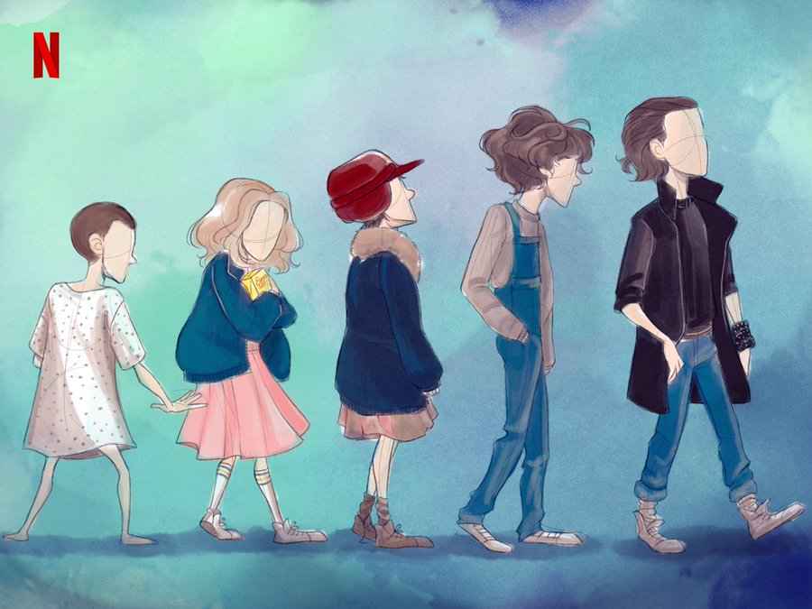
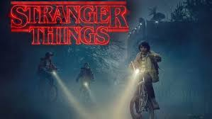
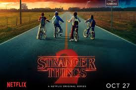
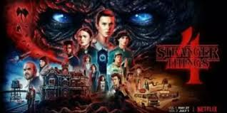
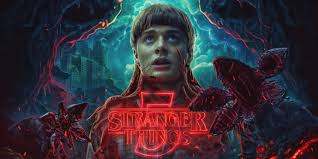

STRANGER THINGS
FRIENDS DONT LIE!!!!
Stranger Things is a popular American sci-fi horror television series created by the Duffer Brothers. It debuted on Netflix on July 15, 2016, and has become one of the platform's flagship shows. The series is celebrated for its 1980s nostalgia, a mix of supernatural and science fiction elements, and compelling storytelling.
Plot: The story begins with the disappearance of a young boy, Will Byers, and the appearance of a mysterious girl known only as Eleven who has telekinetic powers. A parallel dimension called the Upside Down, filled with dark, malevolent creatures, plays a significant role throughout the series. Themes include friendship, family, and fighting against supernatural threats.
"JERKS
| JERKS | ABOUT JERK |
| Eleven (Millie Bobby Brown) | A girl with psychokinetic powers, experimented on in a lab |
| Mike Wheeler (Finn Wolfhard) | A caring and resourceful leader of the friend group. |
| Will Byers (Noah Schnapp) | boy who vanishes and has a mysterious connection to the Upside Down. |
| Dustin Henderson (Gaten Matarazzo) | The funny, intelligent, and loyal friend. |
| Lucas Sinclair (Caleb McLaughlin) | Courageous and practical |
| Jim Hopper (David Harbour) | The town's police chief, who becomes a father figure to Eleven. |
| Joyce Byers (Winona Ryder) | Will’s determined mother |

SEASON 1
Focuses on the disappearance of Will and Eleven's escape from the lab.A love letter to the supernatural classics of the 80's, Stranger Things is the story of a young boy who vanishes into thin air. As friends, family and local police search for answers, they are drawn into an extraordinary mystery involving top-secret government experiments, terrifying supernatural forces and one very strange little girl.

SEASON 2
Explores Will's connection to the Upside Down and introduces new threats. The second season begins in October 1984, as we see a teenage girl with psychic powers and the number 008 tattooed on her arm rob a bank in Pittsburgh. Meanwhile, over in Hawkins, the boys meet new girl Max (Sadie Sink) at school. Her arrival isn't the only change in Hawkins.

SEASON 3
Centers on a new enemy using Hawkins as a base. Even so, the group is able to defeat the Mind Flayer in the end. Following the epic battle at Starcourt and Hopper's apparent death, Eleven is adopted by Joyce and moves away with Will (Noah Schnapp) and Jonathan (Charlie Heaton) at the end of the season.

SEASON 4
Delves deeper into Eleven's origins and introduces the major antagonist Vecna. In a flashback that takes place before the events of season one, season four kicks off with Dr Martin Brenner discovering a bloodied, young (thanks CGI) Eleven standing in the midst of a horrifying massacre that's just happened in Hawkins lab.

SEASON 5
Announced as the final season, expected to conclude the story.
SEASON 1
Focuses on the disappearance of Will and Eleven's escape from the lab.A love letter to the supernatural classics of the 80's, Stranger Things is the story of a young boy who vanishes into thin air. As friends, family and local police search for answers, they are drawn into an extraordinary mystery involving top-secret government experiments, terrifying supernatural forces and one very strange little girl.
SEASON 2
Explores Will's connection to the Upside Down and introduces new threats. The second season begins in October 1984, as we see a teenage girl with psychic powers and the number 008 tattooed on her arm rob a bank in Pittsburgh. Meanwhile, over in Hawkins, the boys meet new girl Max (Sadie Sink) at school. Her arrival isn't the only change in Hawkins.
SEASON 3
Centers on a new enemy using Hawkins as a base. Even so, the group is able to defeat the Mind Flayer in the end. Following the epic battle at Starcourt and Hopper's apparent death, Eleven is adopted by Joyce and moves away with Will (Noah Schnapp) and Jonathan (Charlie Heaton) at the end of the season.
SEASON 4
Delves deeper into Eleven's origins and introduces the major antagonist Vecna. In a flashback that takes place before the events of season one, season four kicks off with Dr Martin Brenner discovering a bloodied, young (thanks CGI) Eleven standing in the midst of a horrifying massacre that's just happened in Hawkins lab.
SEASON 5
Announced as the final season, expected to conclude the story.